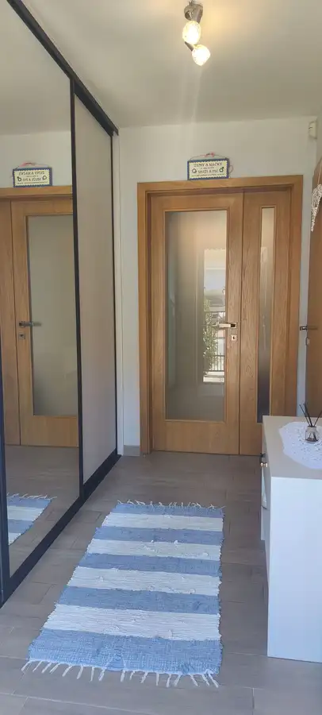
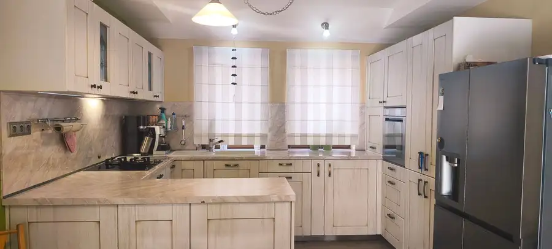
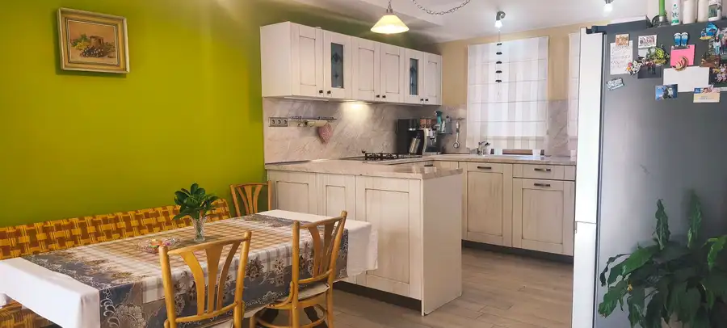
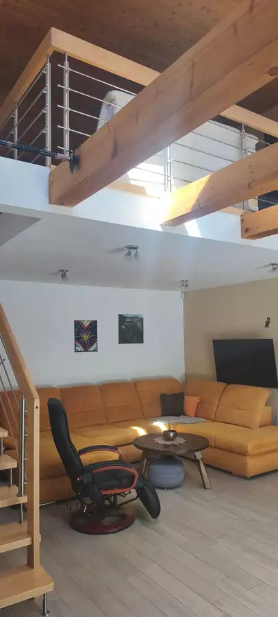
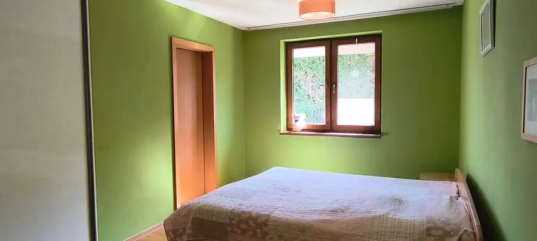
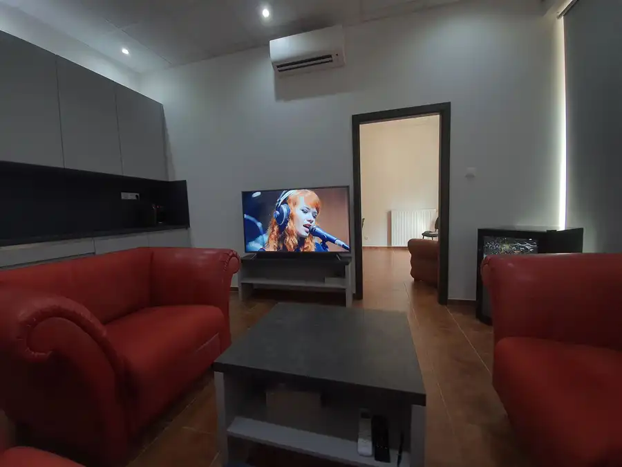
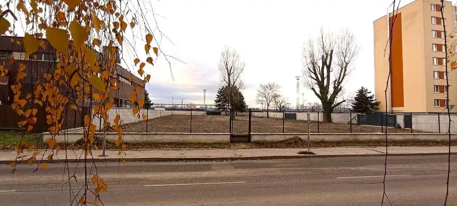
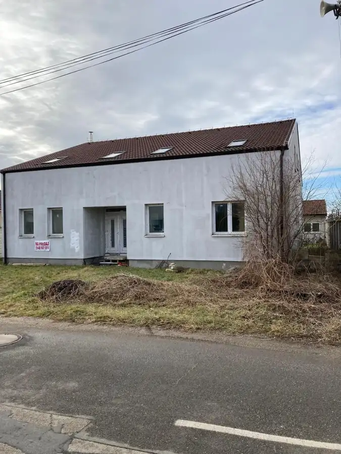

Viacgeneračný dom v lukratívnej časti PK na Sahare !
Pezinok





- Plocha660 m²
- StavČiastočná rekonštrukcia
- VlastníctvoOsobné
O nehnuteľnosti
Ponúkame na predaj priestranný rodinný dom s výnimočne variabilnou dispozíciou, situovaný na rožnom, slnečne orientovanom pozemku s výmerou 660 m². Dom má zastavanú plochu približne 195 m², pričom k domu prináleží ďalších približne 465 m² upraveného pozemku, na ktorom sa nachádza drevený domček.Dom je postavený z tehly a zateplený polystyrénom. Dispozične ide prevažne o jednopodlažný dom v štýle bungalovu, pričom jeho dominantou je presklená horná galéria, ktorá vytvára z obývacej izby veľmi atraktívny otvorený priestor.Veľkou výhodou je rohová poloha nehnuteľnosti a dva samostatné vstupy do domu, vďaka čomu je možné nehnuteľnosť využiť aj ako viacgeneračné bývanie, spojenie bývania s podnikaním alebo na oddelenie súkromnej a pracovnej časti.Dispozícia domuZo vstupnej chodby sa vchádza do priestrannej haly, z ktorej je prístup do jednotlivých miestností.Kuchyňa je situovaná napravo a má priamy výstup na terasu.Na opačnej strane sa nachádza samostatná spálňa, priestranná kúpeľňa s vaňou a WC.Priamo z chodby sa vstupuje do veľkej obývacej izby, ktorá je srdcom celého domu. Obývacia izba je vybavená veľkou rohovou sedačkou a zaujímavým otvoreným priestorom smerom k presklenej hornej galérii. Galéria je s obývacou časťou prepojená otvoreným priestorom, vďaka čomu vzniká vzdušný a netradičný interiér.Z obývacej izby je zároveň priamy výstup na novú terasu s moderným hliníkovým zastrešením. Zastrešenie umožňuje regulovať množstvo slnečného žiarenia natáčaním žalúzií a v prípade potreby terasu úplne uzavrieť pred dažďom. Terasa má novú dlažbu a LED osvetlenie, takže poskytuje príjemné využitie počas celého roka.Ďalšia spálňa disponuje vlastným veľkým šatníkom a samostatnou kúpeľňou so sprchovacím kútom a WC. Samostatná časť – ideálna na podnikanie alebo oddelené bývanieĎalšia časť domu má samostatný vstup z bočnej strany, čo poskytuje množstvo možností využitia.Nachádza sa tu chodbička, kúpeľňa s WC, ďalšia miestnosť pôvodne plánovaná a využívaná ako zubná ambulancia, ako aj nadväzujúci priestor, ktorý je možné využiť napríklad ako sklad, šatňu alebo úložný priestor.Táto časť tak môže byť po príslušnom prispôsobení využitá napríklad ako samostatná obytná jednotka, kancelária, pracovňa, prevádzka alebo priestor pre podnikanie.Pozemok a exteriérRohový pozemok s výmerou 660 m² je slnečne orientovaný, oplotený a ponúka dostatok súkromia.Na pozemku sa nachádza:- vlastná studňa,- zavlažovací systém,- prístrešok na náradie a úložný priestor,- príjemné vonkajšie sedenie,- nová automatická elektricky ovládaná brána,- parkovanie pre jedno vozidlo vo dvore,- ďalšie tri parkovacie miesta pred domom.Čo robí túto nehnuteľnosť zaujímavou? - rohový a slnečný pozemok 660 m²- zastavaná plocha domu cca 195 m²- prevažne jednopodlažná dispozícia – bungalov- tehlový dom so zateplením- dva samostatné vstupy- možnosť viacgeneračného bývania- možnosť oddeliť bývanie a podnikanie- samostatná časť pôvodne využívaná ako zubná ambulancia- veľká obývacia izba s galériou- nová terasa s moderným hliníkovým zastrešením a LED osvetlením- vlastná studňa a zavlažovací systém- dostatok parkovacích miest- oplotený rohový pozemokNehnuteľnosť je vhodná pre rodinu, ktorá hľadá veľkorysý jednopodlažný dom, ale zároveň ocení možnosť oddeliť jednotlivé časti domu a prispôsobiť ich vlastným potrebám – či už na viacgeneračné bývanie, bývanie spojené s podnikaním alebo vytvorenie samostatného priestoru pre člena rodiny.Cena zahrňuje aj sprostredkovateľskú províziu :– zabezpečenie znaleckého posudku akceptovaného všetkými bankami– kompletné preverenie právneho stavu a tiarch danej nehnuteľnosti– vypracovanie všetkých zmlúv súvisiacich s kúpou nehnuteľnosti– notárske poplatky za overenie podpisov– správny poplatok za vklad vlastníckeho práva do katastra nehnuteľností do výšky základného poplatku– služby hypotekárneho poradcuZabezpečíme aj kompletný finančný servis:Vybavíme hypotéku bez stresu a komplikácií. Nechajte to na nás. Celý hypotekárny servis je pre Vás bezplatný. Radi Vám poskytneme porovnanie aktuálnych ponúk a akcií všetkých bánk na slovenskom trhu ako aj výhody jednotlivých bánk, aby sme Vám ušetrili náklady, energiu a čas. Zahoďte starosti s vybavovaním hypotéky.Náš tip pre Vás:Vymeňte svoju starú nehnuteľnosť za novú a ešte ušetrite. S predajom Vám radi pomôžeme.Vypracujeme aj odhad ceny nehnuteľnosti napr. pre potreby dedičského konania.V prípade, že Vás ponuka zaujala, kontaktujte ma: Ing. Katarína Vrbová, tel.: 0904 477 502 , mail: vrbova@mirusreality.sk, web : www.mirusreality.skVšetky technické údaje podliehajú zmenám a sú založené na informáciách poskytnutých majiteľom.
Parametre
- Druh
- Rodinný dom
- Druh domu
- Bungalov
- Dátum zverejnenia
- 02. 10. 2026
- Energetický certifikát budovy
- nie je
- Energie
- 150
- Plocha pozemku
- 660 m²
- Počet kúpeľní
- 3
- Počet nadzemných podlaží
- 2
- Počet vonkajších parkovacích miest
- 3
- Rok poslednej rekonštrukcie
- 2014
- Rok výstavby
- 2014
- Stav nehnuteľnosti
- Čiastočná rekonštrukcia
- Telekomunikácie
- Internet
- Terén pozemku
- Rovinatý
- Typ
- Predaj
- Typ konštrukcie
- Tehlová
- Vlastníctvo
- Osobné
- Vybavenie
- Terasa, Predzáhradka, Vonkajšie parkovacie miesto, Záhrada, Technická miestnosť
- Vykurovanie
- Podlahové, Krb
- Zastavaná plocha
- 195 m²
- Úžitková plocha
- 660 m²
Kde to je


Mohlo by Vás zaujímať

Komerčné priestoryNové 257 000 €Obchodný priestor na Kazanskej ulici ! Podunajské Biskupice, Bratislava 81 m²
PozemokNové 1 000 000 €Lukratívny pozemok na výstavbu polyfunkčnej budovy ! Rača, Bratislava 2935 m²
DomNové 245 000 €Dom s variabilným využitím v Holiciach ! Holice 701 m²